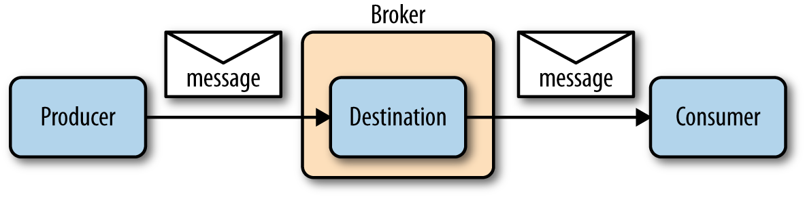
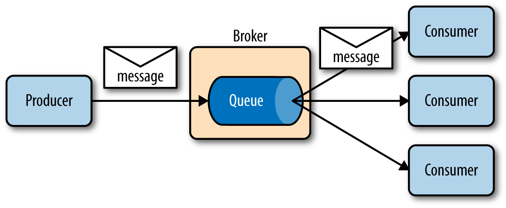
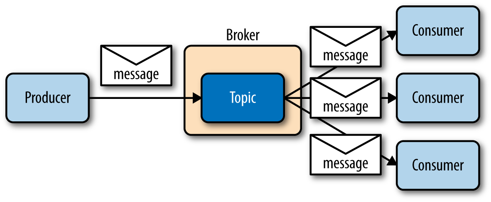
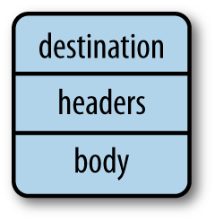
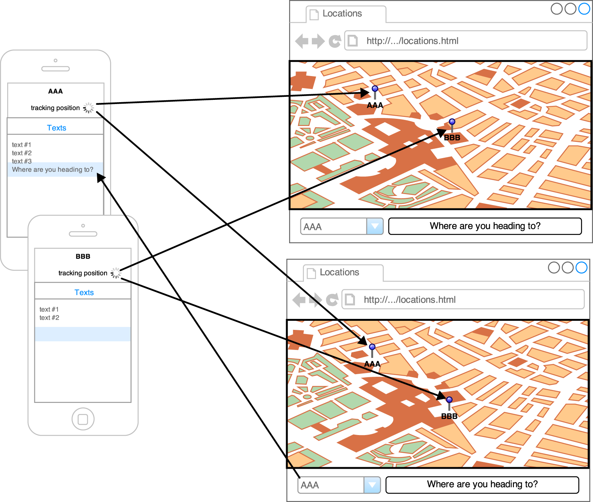
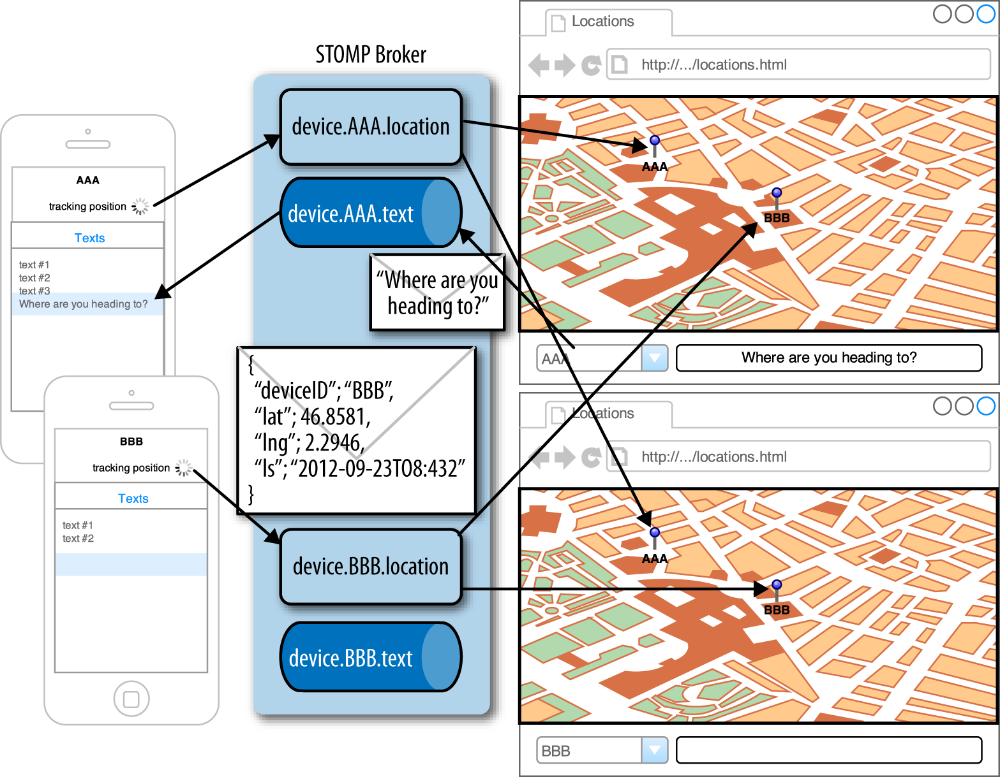
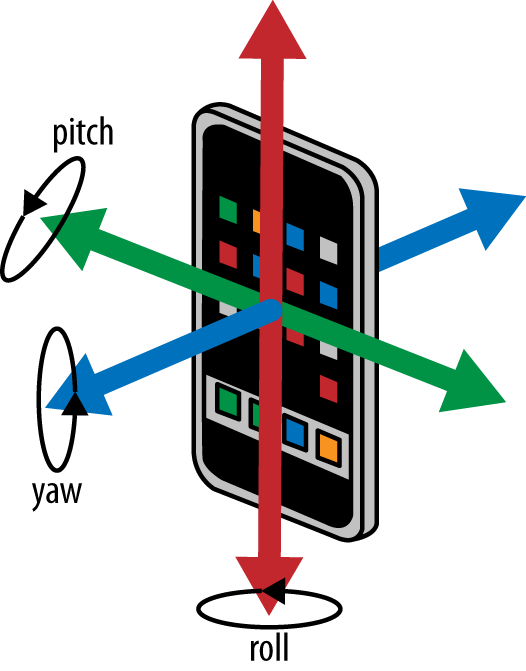
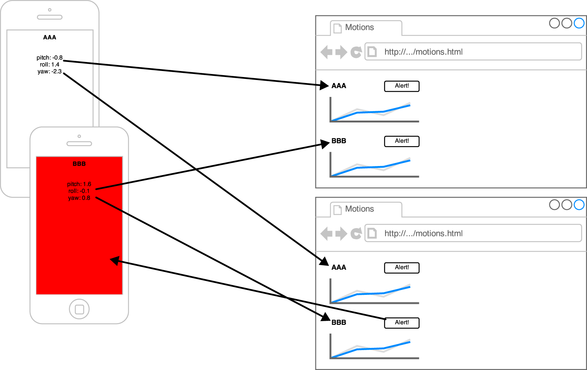
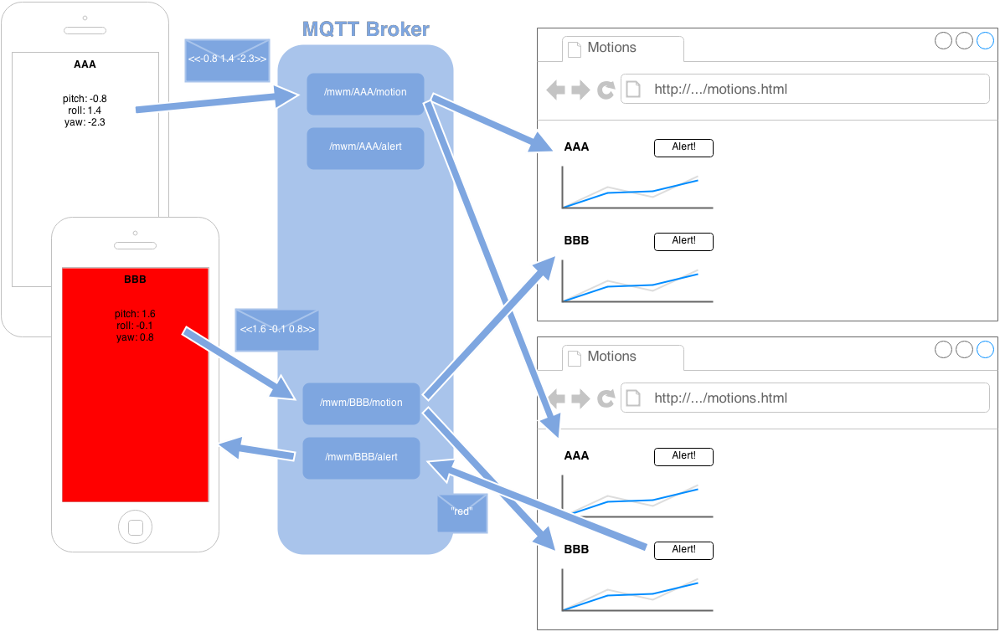

In this chapter, I present the main concepts of messaging protocols. To illustrate their use on mobile and web platforms, we will write one application for each messaging protocol described (i.e., one application for STOMP and another for MQTT). This chapter provides an overview of the overall design of the two applications that will be written in the subsequent chapters.
Messaging Concepts
In the Preface, I introduced messaging protocols in two sentences and five concepts:
An application produces a message to a destination on a broker.
An application subscribes to this same destination to consume the message.
A type of address that is used to exchange messages
Producer
An application that sends messages to a destination
Consumer
An application that consumes messages from a destination
Broker
The server entity that will handle messages from producers and deliver them to the consumers according to their destinations.

Messaging concepts
The simplicity of messaging can be deceiving, but it is this simplicity that allows us to use it in powerful ways.
Depending on the messaging protocol or model, the producer is sometimes called sender or publisher. Likewise, the consumer may be called receiver or subscriber.
In this book, I will always use the general terms of producer and consumer.
One key aspect of messaging is that it loosely couples its participants. The producer and consumer know nothing about each other. When one application produces a message, it has no knowledge of when or where the message will be consumed. There may be one or many consumers that will receive the message. It is also possible that the message will not be consumed at all if nobody has registered any interest for it.
Likewise, when an application consumes a message, it does not know which application sent it, as they never communicate directly. The consumed message could contain enough information to identify the application, but that is not required (and more often than not, it is not necessary).
Producers and consumers do not even need to be online at the same time. The producers can send a message and exit. The message will be held by the broker until a consumer subscribes to the same destination. At that moment, the broker will deliver the message to the consumer.
Producers and consumers need to know about the broker to connect to it, but they may not even connect to the same broker. A set of brokers can constitute a cluster, and messages can flow from one to another before they are finally delivered to a consumer.
Messaging Models
A messaging model describes how the messages will be routed between the producer and consumers.
There are two main messaging models:
Point-to-point
Publish/subscribe
Point-to-Point
In a point-to-point messaging model, a message sent by a producer will be routed to a single consumer.
The producer sends a message to a destination identified as a queue in that messaging model. There can be zero, one, or many consumers subscribed (or bound) to this queue and the messaging broker will route incoming messages to only one of these consumers to deliver the message. As illustrated in #img_intro_point_to_point, when the producer sends a message to the queue, only one of the consumers that are subscribed receives the message.

Diagram of the point-to-point topology
This is also called a one-to-one messaging model: for one message sent by a producer to the queue, there is only one consumer that will receive it.
If there are no consumers bound to the queue, the broker will retain the incoming messages until a consumer subscribes and then deliver the message to this consumer. Some messaging brokers allow messages to expire if they remain in the queue for a certain amount of time. This can be useful to avoid having consumers receive a message corresponding to stale data.
The point-to-point model is best used when only one consumer must process a message. A queue can be used to load balance the message processing across different clients and ensure that only one client will receive it.
Publish/Subscribe
In a publish/subscribe messaging model (often shortened as pub/sub), a message sent by a producer is routed to many consumers.
The producer sends a message to a destination identified as a topic in that messaging model. There can be zero or many consumers subscribed to this topic and the messaging broker will route incoming message to all these consumers to deliver the message. If there are no consumers bound to the topic, the broker may not retain the incoming messages. As illustrated in #img_intro_pub_sub, when the producer sends a message to the topic, all the consumers that are subscribed receive the message.

Diagram of the publish/subscribe topology
This is also called a one-to-many messaging model: for one message sent by a producer to a topic, there are many consumers that may receive it.
When a message is sent to a topic in this model, we often say that it is broadcast to all consumers, as they will all receive it.
Some protocols define the notion of durable subscribers. If a consumer subscribes to the topic as a durable subscriber, the broker will retain messages when the consumer is offline and deliver the messages sent to the topic during its downtime when the consumer comes online again.
The publish/subscribe model is particularly suited to send updates. A producer will send a message on the topic with its updated data and any consumer that is subscribed to the topic will be notified of the updates.
Message Representation
Producers and consumers exchange information using messages.
As illustrated in Figure 1-4, a message is composed of three separate pieces of data: destination, headers, and body.

Diagram of a message
When a producer sends a message to a destination, the name of the destination is put inside the message. When a consumer receives this message, it can use this information to know which destination held this message. This is especially useful when a consumer is subscribed to many destinations, as it helps identify the exchanged data.
A message may also contain headers. Messaging protocols use headers to add metadata information to the messages. This metadata can be read by the consumers and give additional contextual information to a message. Examples of such metadata include message identifiers (that uniquely identify a message for a broker), timestamps (the date and time it was sent by the producer), and redelivered flags (if the message is being delivered again after a failed first attempt). Headers are specific to messaging protocols. Some messaging protocols (such as STOMP) allow the producer to set application-specific headers in addition to the headers defined by the protocol. Other protocols (such as MQTT) do not allow producers to set application-specific headers. In that case, the producer has to put any application-specific information in the message payload.
Finally, a message can have an optional body (or payload) that contains the data exchanged between the producer and consumer. The type of body depends on the messaging protocols, some defining text payload (such as STOMP) or binary (MQTT). A payload is an opaque blob of content. The broker does not read or modify it when it routes a message.
In most cases, we will only use the message body to pass information using a variety of formats (JSON string, simple plain string, array of float values, etc.). However, if the protocol permits it, we will also set additional headers to the message to give metadata information about the body (its content type, its length, etc.) or activate some broker features.
Examples
To illustrate the use of messaging protocols on mobile and web platforms, we will build two sets of applications in this book. Each set will be be composed of an iOS application and a web one. The first application will use STOMP and the second one will use MQTT.
Locations Application Using STOMP
Suppose that we work for a delivery company that uses a fleet of trucks to deliver packages to its clients.
Each truck is responsible for the delivery of packages and the drivers receive orders from the company's headquarters. To efficiently manage all the trucks, the company wants to monitor the truck’s positions and be able to adjust the orders as necessary.
We will build a very simple application named Locations that looks similar to this example (see ).
The "truck" will use an iOS application to broadcast the device’s geolocation data using its GPS sensor and display text messages that it receives from the headquarters. The "headquarters" will use a web application to display the locations of all the "trucks" on a map. It will also be used to send text messages to a given truck on their devices:
In #ch_mobile_stomp, we will write the Locations iOS application using the STOMP protocol to send GPS data and receive text from an iOS device.
In #ch_web_stomp, we will write the web application using the STOMP protocol over Web Sockets to receive GPS data in a web browser and send text to the devices.

Diagram of the Locations application with two devices, AAA and BBB, and two web applications
Before introducing STOMP, the messaging protocol that will be used by the application, we can already define the application’s messaging models and how the different parts of the application will exchange messages.
Messaging models for the Locations application
In this application, we will use two destinations, one with a publish/subscribe model to broadcast the device GPS data and one with a point-to-point model for the text messages:
device.XXX.location is the topic to broadcast its GPS geolocation data where XXX is the device identifier (publish/subscribe model)
device.XXX.text is the queue to receive simple text messages (point-to-point model)
A topic is used to send the GPS data, as this allows potentially many consumers to receive the information. However, a queue is used to handle the device’s text as only one single device will consume messages from this destination.
Each device (identified by a unique identifier XXX) running the Locations application will be:
A producer of messages to the topic device.XXX.location
The only consumer of messages from the queue device.XXX.text
Conversely, the web application will be:
A consumer of messages from all the topics of the form device.XXX.location
A producer of message to all the queues of the form device.XXX.text
Message representation for the Locations application
There will be two types of exchanged messages:
One to represent GPS data (exchanged on the topics device.XXX.location)
One to represent orders (exchanged on the queues device.XXX.text)
The Locations iOS application will send the GPS data using a JSON representation in the message payload ().
deviceID is the identifier of the device that sends its position
lat is a number representing the position’s latitude
lng is a number representing the position’s longitude
ts is a string representing the time when the position was taken (using the ISO 8601 format)
The text messages that will be consumed by the Locations iOS application will be represented as a simple plain-text string:
"Where are you heading to?"
A more realistic representation of this message would also contain additional information such as the identifier of the headquarters sending the message. We are using a plain-text version, because this format is sufficient for our preliminary example.
With the messaging topology and data representation known, we can now refine the Locations application diagram ().

Diagram of the Locations application with its messaging models and representations
Motions Application Using MQTT
Most mobile devices contain a sensor that allows for tracking the device motions (and to a certain extent, the motions of the user). Using additional sensors, we could even concievably monitor the user’s health data (heart rate, hydration, blood glucose level, etc.). This type of information could be sent to a centralized application that would be able to track the data and send alerts to the user when necessary.
Following this model, we will write a simple application called Motions to illustrate the use of the MQTT protocol. The iOS application will track the device motion and change its background color to advise its user when an alert message is received.
Device motion will be represented by three values corresponding to its pitch, roll, and yaw values, as shown in .

The pitch, roll, and yaw values represent the device motion
The pending web application will display the motions of all devices that broadcast them and be able to send alert messages to them ():
In #ch_mobile_mqtt, we will write the Motions iOS application using the MQTT protocol to send data about the device motions and receive alerts.
In #ch_web_mqtt, we will write a web application using the MQTT protocol over Web Sockets to receive all the device motions data and display them. The web application will also be able to send alert messages to any devices sending its motions data.

The Motions application with two clients, AAA and BBB, and two web applications monitoring them
Messaging models for the Motions application
In this application, we will use two destinations with the publish/subscribe model:
/mwm/XXX/motion (where XXX is the device identifier) is the topic to broadcast the device motion data (publish/subscribe model)
/mwm/XXX/alert is the topic to exchange alert messages for a given device (publish/subscribe model)
Each device running the Motions application will be:
A producer of messages to the topic /mwm/XXX/motion
A consumer of messages from the topic /mwm/XXX/alert
Conversely, the web application will be:
A consumer of messages from all the topics of the form /mwm/XXX/motion
A producer of message to all the topics of the form /mwm/XXX/alert
MQTT only supports the publish/subscribe messaging model. Ideally, the alert destination would be better modeled as a queue (one per device). MQTT does not have support for queues, so we will work around that by using one topic for each device and only have the corresponding device subscribe to it.
Message representation for the Motions application
There will be two types of exchanged messages:
One to represent device motion data (exchanged on the topics /mwm/XXX/motion)
One to represent alerts (exchanged on the topics /mwm/XXX/alert)
The Motions iOS application will send the device motions data in a binary message where its payload will be composed of three 64-bit floats representing the device’s pitch, roll, and yaw values ().
Device motion message paylaod
<< 1.6 -0.1 0.8 >>
The message is composed of three 64-bit floats for the pitch, roll, and yaw values.
The alert messages that will be consumed by the Motions iOS application will be represented as a simple plain-text string corresponding to a color. The Motions application will use this payload to temporarily change its background color to alert the user ().
Alert message payload
"red"
The message is composed of a string containing the name of a simple color.
With the messaging topology and data representation known, we can now refine the Motions application diagram ().

Diagram of the Motions application with its messaging models and representations
Summary
In this chapter, we learned about the messaging protocols and how they differ from request/reply protocols. We introduced two messaging models (point-to-point and publish/subscribe) and the parts that compose a message (destination, headers, and payload).
We also took a look at the two applications that will be written in the subsequent chapters--the Locations application (which uses STOMP) and the Motions application (which uses MQTT)--and established the messaging models and representation that they will use.
In the next chapter, we will start writing the Locations iOS application. If you are more interested in learning about MQTT, you can go directly to #ch_mobile_mqtt to start writing the Motions application.
 "lat": 48.8581,
"lat": 48.8581, "lng": 2.2946,
"lng": 2.2946, "ts": "2013-09-23T08:43Z"
"ts": "2013-09-23T08:43Z" }
}